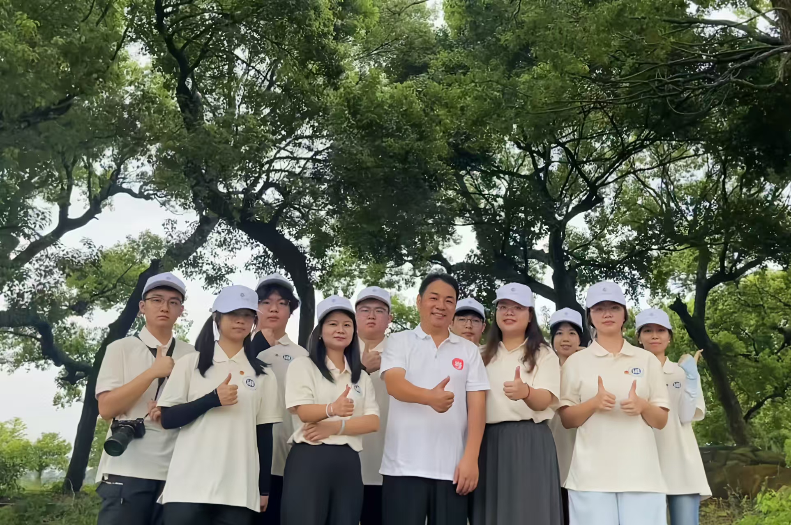

广州应用科技学院“柳韵数兴”实践队，是一支积极响应广东青年大学生“百千万工程”突击队行动号召、投身乡村振兴一线的优秀青年队伍。该队伍由广州应用科技学院计算机学院的10名优秀学子组成，于2025年7月从肇庆跨越近1000公里，奔赴湛江市麻章区湖光镇那柳村，开展了为期7天的暑期“三下乡”社会实践活动。队伍以“数字赋能”为核心，旨在用计算机专业力量为古村落注入“数字动能”，探索农文旅融合发展的新路径。

柳韵数兴实践队在那柳村合影
在文化传承与数字转化方面，“柳韵数兴”实践队深入挖掘那柳村的文化底蕴，特别是针对广东省省级非物质文化遗产——蛤蒌粽的制作技艺展开溯源调研。队员们不仅下地采摘蛤蒌叶、体验传统包粽工艺，还巧妙结合人工智能技术，将蛤蒌粽、猪笼饼等非遗元素转化为折扇、冰箱贴等极具地方特色的文创产品。同时，队伍通过搭建抖音、小红书、微信视频号等多平台的“云端宣传矩阵”，全方位讲述那柳故事，并开发了整合村史脉络与非遗资源的微信小程序，构建起“文化保护-传播-变现”的数字化闭环生态。
在科技助农与产业赋能方面，实践队充分发挥计算机专业优势，推动那柳村特色产业的价值链重塑。队员们深入700多亩富贵竹种植基地与红树林湿地开展生态调研，分析“订单农业+直供模式”的优势，并利用无人机航拍为“贰拾叁都”文旅项目积累数字化推广素材。通过直播带货，他们带领网友“云逛”红树林、古炮楼，推出“云端认养富贵竹”等服务，有效拓宽了当地农特产品的销售渠道，助力乡村产业升级。
在民生服务与数字素养提升方面，实践队心系村民，开展了极具针对性的数字技能培训与暖心志愿服务。针对村民，队伍手把手教授微信使用、在线支付等技能，并为低保户家庭精心拍摄、装裱了全家福照片；针对村里的适龄青年，则开展了涵盖人工智能基础概念与简单实践的培训，提升其科技创新能力。此外，队员们还在村内绘制了展现非遗与红树林生态的文化墙绘，并修补破损墙面，让斑驳的墙体变成了“会说话的文化展”。
作为一支将个人理想融入党和人民事业的新时代青年队伍，“柳韵数兴”实践队以大地为课堂，以数字技术为画笔。他们不仅在那柳村留下了数字基础设施与文创名片，更在走基层、察实情、解难题的生动实践中，诠释了广应科学子的责任与担当，用实际行动为广东县镇村的高质量发展贡献了澎湃的青春力量。